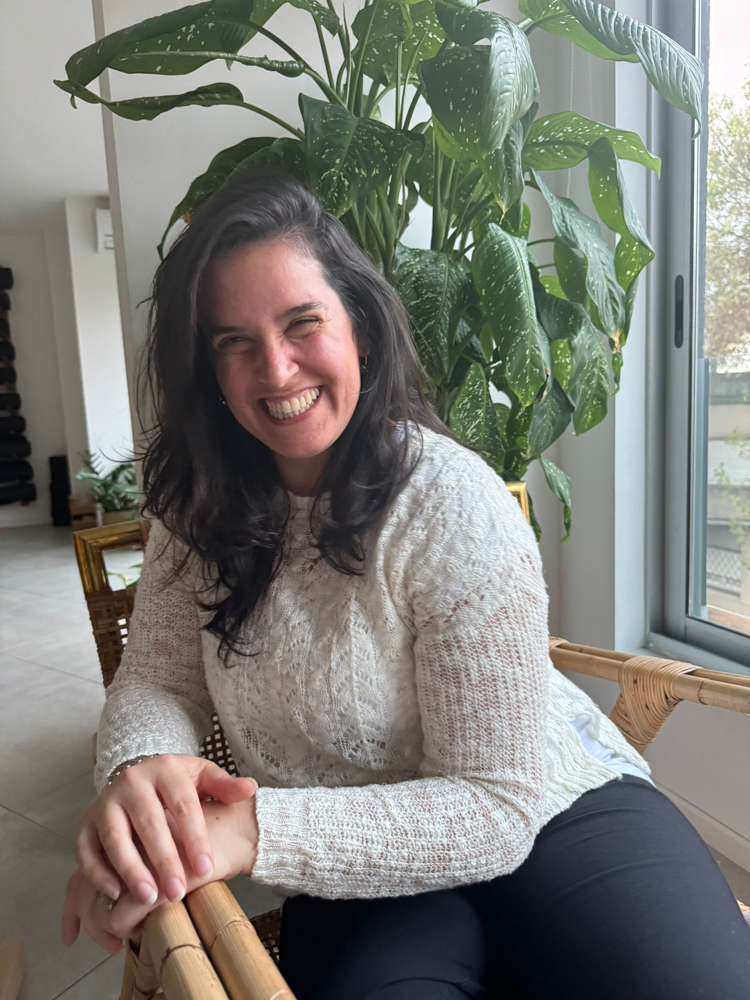

Reconecta con tu identidad.
Transitá tu vida con confianza y propósito, encontrando el equilibrio entre quien sos y el rol que habitás. Es momento de salir del piloto automático.

Hola, soy Jessica (Jeca).
Acompaño a mujeres a redescubrir su brújula interior. Creo firmemente que ninguna mujer debería atravesar sus cambios de identidad en soledad o en modo supervivencia.
"Tu identidad es el cimiento de todas tus decisiones. Cuando te conocés, el mundo se ordena."
Mi enfoque combina la calidez humana con herramientas profesionales para ayudarte a habitar tu presente con mayor claridad.
La Manada
No somos seres aislados. En mis encuentros, fomentamos la conexión y el apoyo mutuo (la Manada) para crecer juntas en este camino llamado vida.
Propuestas para tu Expansión
Sesiones de Claridad
Desentrañá el nudo de lo que hoy te abruma y trazá una hoja de ruta clara para recuperar tu paz mental.
Saber másProyecto Mamuta
Un proceso de 8 semanas para desarmar patrones y reconstruir una forma de vida fiel a quien sos hoy.
Saber másReconectá
Encuentros presenciales íntimos para compartir y renovar la energía en manada, lejos del automático.
Saber másSesión de Claridad
Un espacio para detener el ruido y ver con nitidez. Identificamos juntas el freno real que te impide avanzar para que recuperes tu paz mental.
Identificar el freno
Separamos lo urgente de lo realmente importante para descubrir qué es lo que hoy te impide avanzar con claridad.
Nueva mirada
Aplicamos herramientas para que dejes de ver el problema como un callejón sin salida y visualices nuevas opciones.
Mapa de ruta
Te llevás un mapa claro con pasos concretos para avanzar con foco y sin presión, recuperando tu centro.
Proyecto Mamuta
Un proceso de reconstrucción personal para desarmar los patrones que te condicionan y crear una forma de vida alineada a quien sos hoy.
Semanas 1-2. Apaciguamos la reactividad. Identificamos los pilotos automáticos y las creencias que guían tus decisiones sin que te des cuenta.
Semanas 3-5. Integramos nuevos recursos de confianza y gestión emocional. Dejás de intentar encajar para empezar a ocupar tu espacio.
Semanas 6-8. Diseñamos tu nueva forma de actuar y establecer límites. Te llevás un sistema para liderar tu proceso de forma autónoma.
Reconectá
Un encuentro presencial íntimo para compartir, sentir y renovar la energía en manada.
Un círculo de presencia y escucha, diseñado para que te des el permiso de ser vos misma, sin etiquetas ni juicios. Recordamos lo bien que nos hace volver a lo simple.
Próximo encuentro: Sábado 03/10/2026
Vivir la experiencia
No es un taller convencional ni una charla de expertos. Es un espacio de desconexión del automático para habitar el presente desde la escucha genuina y la honestidad.
Creá tu ritual interior
Ingresá tu correo para acceder a mi guía interactiva gratuita y empezar a transformar tu presente hoy mismo.
¿Agendamos un café virtual?
Hablemos sobre cómo puedo acompañarte en tu proceso.
Agendar café